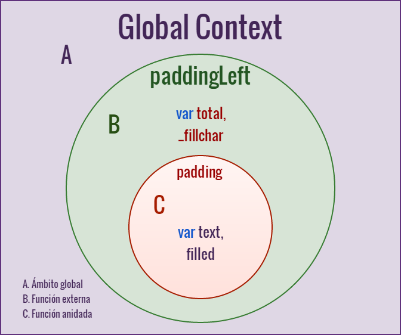

Lazy Function Definition
Lazy Function Definition
Éste es un patrón de diseño con el que conseguiremos reducir la ejecución de nuestro código haciendo que una porción del código sea ejecutada solo una vez y de allí que recuerde el resultado de una operación o el estado del closure
Ventajas
- La función es redefinida por una versión optimizada.
- Se gana una mejora en el rendimiento en futuros llamados a la función.
- Los objetos a inicializar sólo serán cargados cuando se invoque la función por primera vez.
- Puede mantener en cache ( del closure) el resultado de una tarea.
- Ideal para el uso interno de APIs.
Desventajas
- La función deja de ser un objeto de primera clase
- La función redefinida crea una nueva referencia en memoria (un nuevo objeto es asignado).
- No se debería usar como método público o propiedad de un objeto. -- Ver caso 1--
- Si insiste en utilizarla para ser accedida por referencia, le causará problemas ;)
¿ Quedo claro ?

Conceptos
A fin de entender con mayor claridad este patrón de diseño, vamos a repasar algunos conceptos:
- Closure
- Lazy evaluation
- Lazy initialization
¿Que es un closure?
Un closure es un tipo especial de objeto que combina dos cosas: una función, y el entorno en que se creó esa función. Es decir que una función definida dentro del closure “recuerda” el entorno en el que se ha creado y tiene acceso a las variables libres (en el scope de la función padre).
Atributos de un Closure
- El closure permite encapsular el código.
- El contexto de una función anidada incluye el scope de la función externa.
- El entorno está formado por las variables locales dentro del ámbito (scope) cuando se creó el closure (variables libres).
- Una función anidada sigue teniendo acceso al contexto de la función externa, incluso después de que ésta haya retornado.
Closure en acción
//inicio closure
function paddingLeft (total, fillchar) { //outer fn
//variables libres
total = total || 2;
fillchar = fillchar || "0";
return function padding (text) { //inner fn
var filled =
new Array(total).join(fillchar) + text;
return filled.slice(-total);
};
}
//fin closure
var zeroPad = paddingLeft();
console.log( zeroPad(9) );
var dotPad = paddingLeft(20, ".");
console.log( dotPad("pg 13") );
Scoping
Lazy evaluation
Se conoce también como call-by-need y es una estrategia que retrasa la evaluación de una expresión hasta que su valor es requerido evitando realizar cálculos innecesarios. En ocasiones, el corto-circuito en la evaluación de expresiones boleanas también es llamado lazy, en donde el segundo argumento es evaluado sólo si el primer argumento resulta satisfactorio para el operador lógico.
Lazy evaluation en acción
function test (nombre, edad) {
//lazy evaluation
if (nombre && edad && canVote(edad)) {
//ejecuta alguna tarea compleja
console.log(
"%c ejecuta alguna tarea compleja",
"color: green");
}
}
function canVote (edad) {
//se realiza algún cálculo
console.log("%c ejecuta canVote()", "color: blue");
return edad > 17;
}
Lazy initialization
También conocido como inicialización perezosa o inicialización tardía, es una técnica utilizada para retrasar la creación de un objeto, el cálculo de una operación, o algún otro proceso costoso hasta que sea necesitado la primera vez. La forma tradicional de lograr el objetivo, es mantener un flag (indicador) que nos permita saber si el objeto es requerido.
Lazy initialization en acción
function foo() {
//t es el flag que determina
//si el objeto fue requerido
if (foo.t) {
return foo.t;
}
console.log("inicializar");
foo.t = new Date();
return foo.t;
}
Ahora sí, que venga el tal Lazy Pattern...
Lazy Function Definition
Como todo patrón de diseño, debemos usarlo en el contexto adecuado, y una función puede implementar el patrón de función perezosa si requiere solucionar alguno de los siguientes problemas:
- la función una vez evaluada, retornará el mismo valor en las próximas llamadas.
- la función requiere inicializar objetos.
- mantener el estado de objetos (closure) que serán utilizados por la función principal.
Sobrescribiendo funciones
//declaramos una función
function pushButton() {
//mantenemos el estado interno
//de las veces que invoquemos la función
var _calls = 1;
//redefinimos la función
pushButton = function() {
_calls += 1;
alert(_calls + " call to pushButton()");
};
//ésto será ejecutado sólo la primera vez
//que se invoque la función pushButton()
alert("First call to pushButton()");
}
pushButton(); //primer llamado
pushButton(); //2
pushButton(); //3
Lazy Function Definition
De manera sencilla hemos visto lo que es una función que se sobrescribe así misma. Sin embargo, en el patrón Lazy Function Definition, una función perezosa esta formada de tres partes:
- Inicializar. Evaluar y hacer una serie de cálculos que determinan el valor a retornar.
- Redefinirse a sí misma. La función se sobrescribe a sí misma para evitar realizar de nuevo las operaciones efectuadas en el paso anterior.
- Autoinvocarse. La función se llama así misma para retornar el valor después de sobrescribirse.
Lazy function en acción
function foo() {
//1. inicializar
console.log("inicializar");
var t = new Date();
//2. sobrescribirse
console.log("sobrescribir");
foo = function() {
return t;
};
//3. autoinvocarse
console.log("autoinvocar");
return foo();
}
¡Asombrosooooo!

Lazy function condicional
var getText = function (DOMNode) {
//inicializar y redefinir condicionalmente
getText = (
typeof DOMNode.innerText !== "undefined"
? function (DOMNode) {
return DOMNode.innerText;
}
: function (DOMNode) {
return DOMNode.textContent;
}
);
//autoinvocar
return getText(DOMNode);
}
Si bien este patrón puede ser de mucha utilidad,
no lo usemos inadecuadamente
(ver drawbacks),
ya que podríamos terminar haciendo esto...